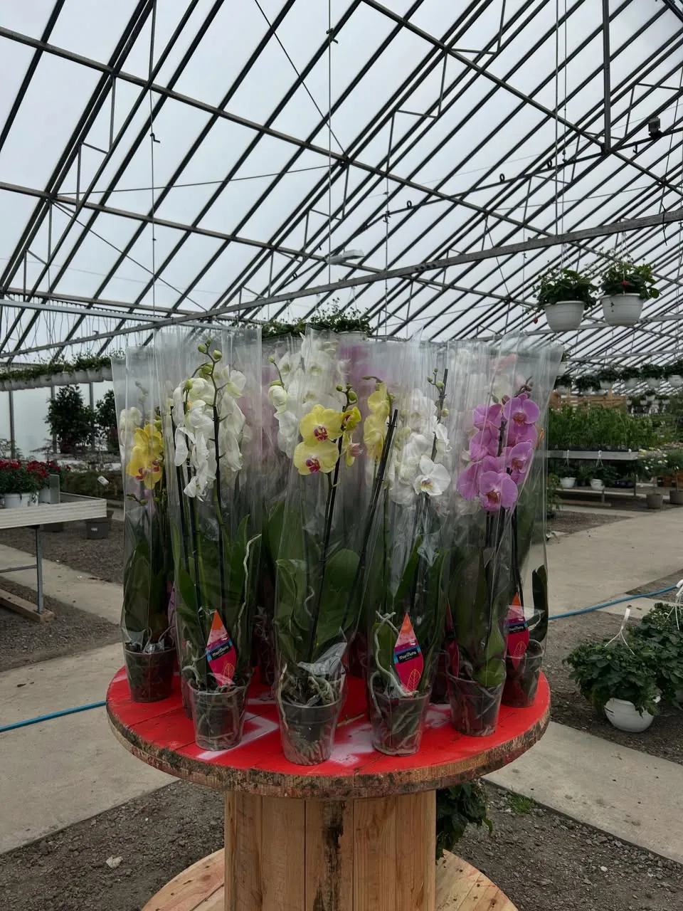
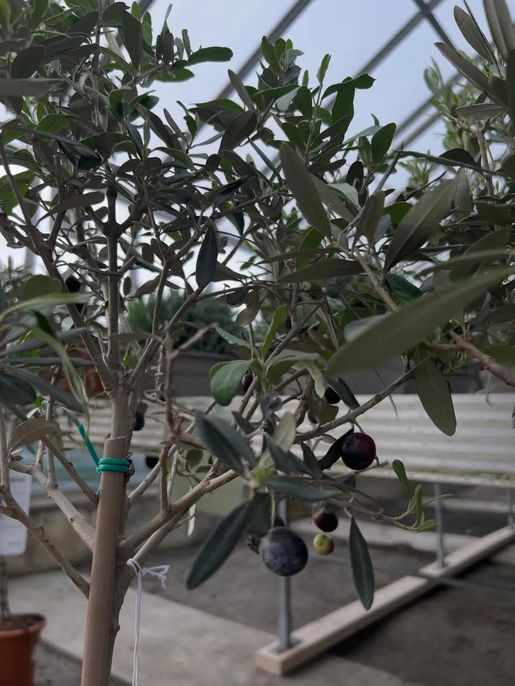
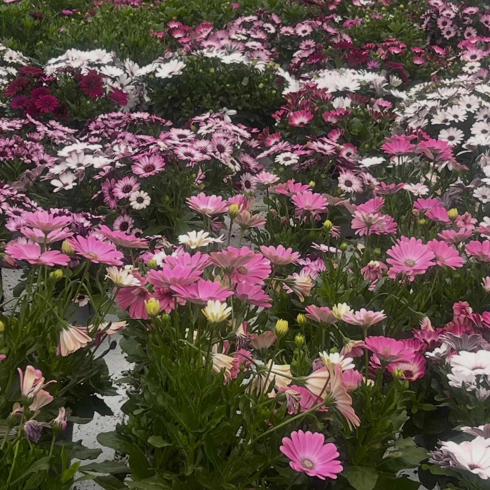
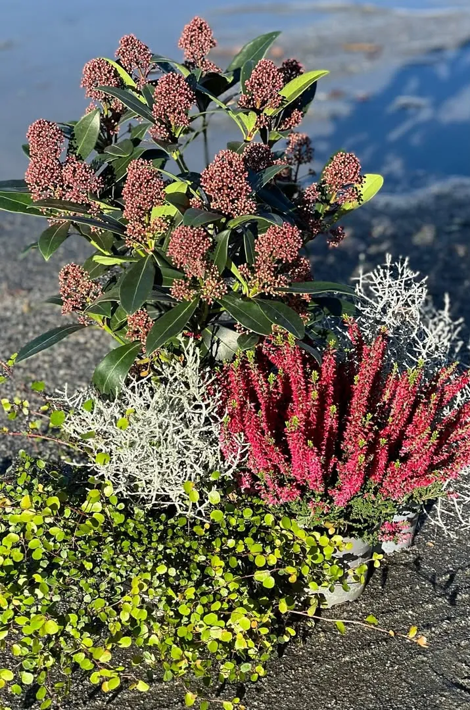
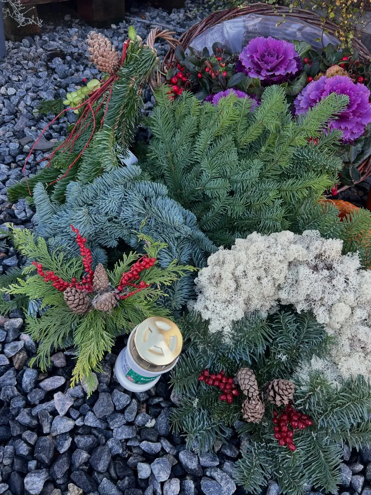
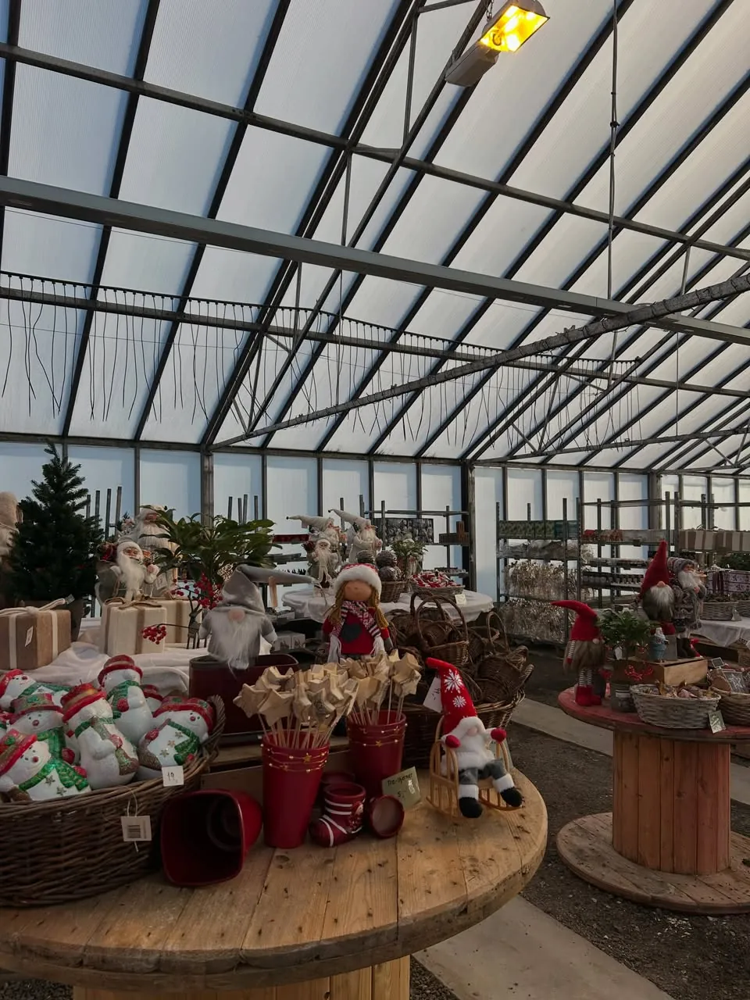
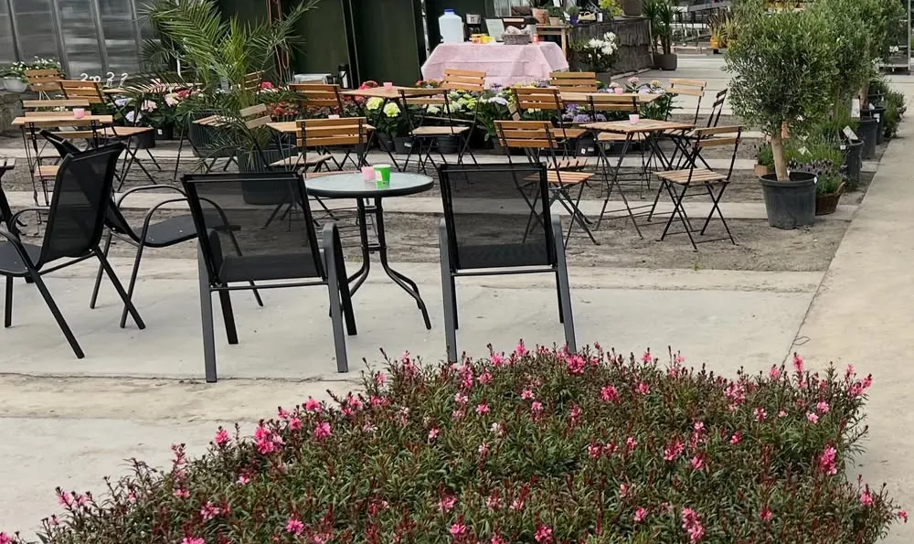
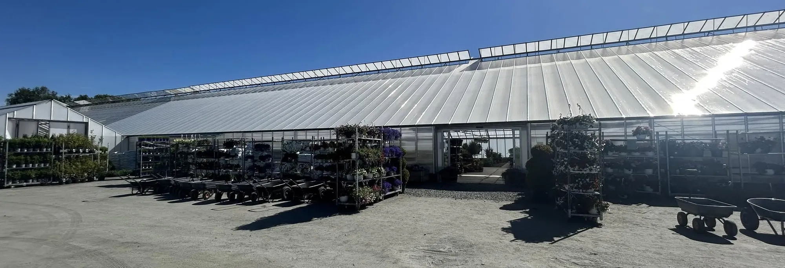

200 meter Lenger har ikke blomstene våre reist.
Gartneriet har røtter i Moss som går over 130 år tilbake, og Magne Bergerud er tredje generasjon på gården i Rygge. Til vanlig sendes blomstene herfra til grossister og butikkjeder.
Våren 2026 ryddet vi et av veksthusene fra 1972 og åpnet dørene. Nå kan du handle blomstene der de har vokst opp.


Utvalget
Sommerblomster  og ampler fra eget gartneri.
Orkideer
og ampler fra eget gartneri.
Orkideer

og stueplanter. Stauder, busker og frukttrær. Urter og grønnsaksplanter.
Oliventrær
og grønnsaksplanter.
Oliventrær 
, krukker, kurver og jord.
og jord.
Utvalget skifter med årstidene og med det som er klart i gartneriet.




Året i drivhuset
Sommerblomster, ampler, urter og stauder til hagen og balkongen. Det meste kommer rett fra gartneriet.

Utpå sommeren modner blåbærene på jordet. Da kan du plukke selv, eller kjøpe ferdig plukket i butikken.


Lyng, krysantemum, høststjerner og blomsterløk. Før Halloween rydder vi plass så du kan skjære ut gresskar i drivhuset og slippe sølet hjemme.


Julestjernene, azaleaene, amaryllisene og julerosene kommer rett fra gartneriet til Magne. Vi har kranser og granbuketter, og i november holder Tone kranseverksted.
Mat fra gårdene rundt oss
Vi har en kjøledisk midt blant blomstene. Om høsten henter vi også gresskar fra Vestre Bjølsund gård.
Trenger du en gave, setter vi sammen en kurv i den prisklassen du ønsker. Vi har gavekort også.
-
 Ost
Rygge meieri
Ost
Rygge meieri
-
 Eplemost
Olseng i Skjeberg
Eplemost
Olseng i Skjeberg
-
Blåbær
Vårt eget jorde
-
 Gavekurver
Satt sammen etter ønske
Gavekurver
Satt sammen etter ønske
Det står kaffe på kanna.
Sett deg ned ved et av bordene mens du planlegger hagen. Det er helt greit å bare komme innom for å kikke.

Åpningstider
| Mandag til onsdag | 10-16 |
|---|---|
| Torsdag | 10-18 |
| Fredag og lørdag | 10-16 |
| Søndag | 12-16 |
Rundt helligdager kan tidene være annerledes. Da sier vi fra på Facebook og Instagram.
Hasleveien 51, Dilling
Vi ligger på Vang i Rygge, en kort kjøretur fra Moss.
Du kan også sende oss en melding på Facebook eller Instagram.
